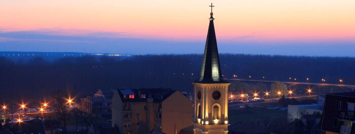

ZAŠTO PANČEVO?
Pančevo je moderan grad koji se brzo razvija. Blizina Beograda i dobra infrastrukturna opremljenost učinili su da Pančevo postane atraktivno ne samo za mlade bračne parove koji se opredeljuju da u Pančevu započnu svoj porodični život, već i sve više za Beograđane koji ovde pronalaze miran kutak za udoban život nadomak Beograda.
Kupovina nepokretnosti u Pančevu se pokazuje kao dobro investiciono ulaganje, budući da su cene stanova u Beogradu dostigle svoj maksimalan pik i stabilzovale su se na određenom nivou, dok cene u Pančevu još uvek rastu i time čine investiciju dodatno isplativijom.
Obilaznica spaja Pančevo sa svim najvažnijim autoputevima u Zemlji i odlična je veza sa Beogradom, za 20-ak minuta ste u centru Beograda, dok BG voz redovno saobraća i omogućava đacima, studentima i penzionerima jeftin, lak i brz prevoz do Beograda. Veza sa autoputem vas spaja sa svim krajevima Zemlje. Pančevo se nalazi na međunarodnom putu E-70, koji vodi od Beograda do grada, kao i putu E-75, kojim ćete doći iz Novog Sad, postoji razgranata mreža puteva koji Pančevo povezuje sa mnogim gradovima i naseljima: državni put prvog B reda 10 (E-70) (Beograd — Pančevo — Vršac — Rumunija).
Pančevo sadrži sve adinistrativne institucije, školske ustanove, poslovne objekte, prodavnice, kulturne, zdravstvene i sportske objekte koji omogućavaju udoban život i obavljanje svakodnevnih obaveza, a da ne gubite previše vremena u saobraćaju.
Pančevo je grad koji je urbanistički dobro rešen, tako da ne postoji problem sa električnom energijom, snabdevanjem vodom ili kanalizacijom što je veliki problem u mnogim prigradskim opštinama Beograda. Takođe, lako je naći parking u svakom delu grada a zbog ravnog terena moguće je uvek koristiti bicikl. Generalno govoreći nema saobraćajnih gužvi, na svako mesto stignete brzo bez nepotrebnog gubljenja vremena.
Pančevo ima 12 osnovnih i 8 srednjih škola koje su kvalitetom nastave jedne od najboljih u državi. Pančevačka Gimnazija “Uroš Predić” jedna je od najprestižnijih u državi a istu su pohađali brojni velikani: pronalazač Mihailo Pupin, slikar Uroš Predić, književnik Miloš Crnjanski, prota Vasa Živković, kompozitor Dimitrije Mita Topalović, akademik Dimitrije Stefanović, pesnik Dušan Vukajlović, arhitekta Nebojša Marojević, matematičar Stevo Todorčević, odbojkaš Zoran Gajić, rukometaš Žikica Milosavljević, glumac Nebojša Glogovac, plivačica Nađa Higl...
Pančevo ima dobru mrežu primarne i sekundarne zdravstvene zaštite I veliki broj parkova, zelenih oaza, šetališta i sportskih terena.
Pančevo ima jednu od najbrže rastućih privreda u Srbiji zasnovan na modernim tehnologijama i klasičnoj industriji, što je praćeno velikim brojem novootvorenih visokokvalifikovanih radnih mesta.
Pančevo ima kulturnu scenu koja ni najmanje ne zaostaje za Beogradom ili bilo kojim drugim velikim gradom u Regionu. Pančevo Film Festival, Classic fest, Pančevački džez festival, Mikini dani (posvećeni Miroslavu Miki Antiću), Internacionalni karneval Pančevo, Nova festival (festival avangardne umetnosti). Pored toga, Kulturni centar Pančevo, organizuje niz pozorišnih predstava i bioskopskih projekcija, galerija, radionica za decu i mlade i ima brojne kulturne sadržaje za sve građane.
U Pančevu se možete baviti profesionalnim ili rekreativnim sportom. Za najranije uzraste namenjena je školica sportića, postoji preko 15 modernih fitness centara, klubovi za fudbal, rukomet, odbojku, ragbi, košarku, kajak i kanu klub ili veslački klub.